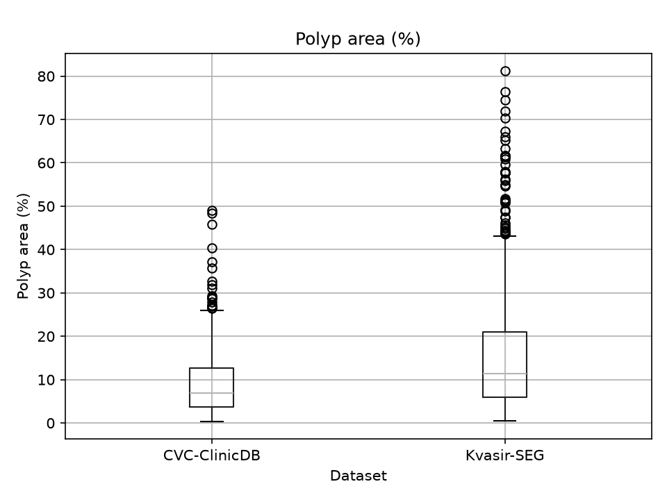
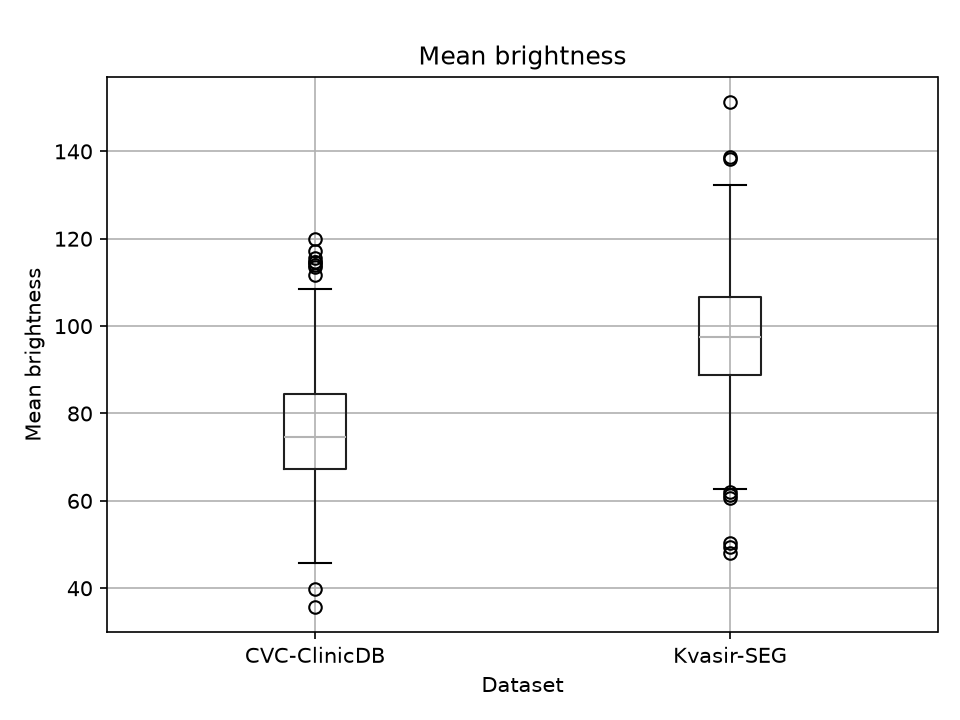
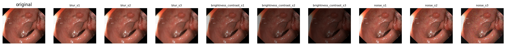

Context. The project tests whether using YOLOv8's detection confidence to find uncertain detections, and refining their bounding-box prompt before it is passed to a frozen SAM 2, improves polyp segmentation over the YOLO-SAM2 baseline of Mansoori et al. [1]. Phase 2 prepared the data this needs: a primary dataset with a fixed train/validation/test split in YOLO format, an external dataset for the domain-shift test, a corrupted copy of the test split for the image-shift test, and a working environment in which the baseline pipeline runs on the prepared data. Every number in this report is read from the verification files written by the preprocessing scripts; every design choice is recorded with its alternatives and evidence in docs/decision_log.md (entries DL-01 to DL-29).
| Kvasir-SEG [3] — primary dataset | CVC-ClinicDB [4] — external evaluation dataset | |
|---|---|---|
| Publisher | Simula Research Laboratory, datasets.simula.no/kvasir-seg | Hospital Clínic & Computer Vision Center, Barcelona; polyp.grand-challenge.org/CVCClinicDB |
| Content | 1,000 colonoscopy images, each with a pixel-level polyp mask verified by a gastroenterologist, plus a bounding-box file | 612 frames extracted from colonoscopy video sequences, each with a hand-drawn polyp mask |
| Resolution | 333 distinct sizes, 332–1920 × 352–1072 px | all 384 × 288 px |
| Formats | JPG images, JPG masks (RGB), JSON boxes | PNG images and masks (TIF also available) |
| Role in this project | training, validation and test (700 / 100 / 200) | external test set only; never used for training or tuning |
| Terms | research and educational use only; commercial use needs written permission | "completely restricted for research and educational purposes", commercial use forbidden |
Kvasir-SEG is the dataset the baseline was trained and evaluated on, so it is the natural primary set. CVC-ClinicDB comes from a different hospital, a different endoscope and a different annotation team; it is used in its entirety as a held-out test set because the project's question is robustness to such shifts, and because its frames come from video sequences, so a random split would leak near-identical frames between train and test (DL-03). The baseline code (sajjad-sh33/YOLO_SAM2, commit d86e375) has no license; it was cloned for reading only, is cited, and none of it was copied into our repository (DL-16).
kvasir-seg.zip, 46,227,172 bytes, SHA-256 03b30e21d584e04fa…3478f7 (full hash in docs/data_report.md). The archive is kept next to the extracted files and the hash is re-checked after processing. On Google Colab the official link returned 0 bytes on 2026-10-09, so the notebook uses the dataset author's Kaggle copy (debeshjha1/kvasirseg); it reproduced exactly the same verification numbers, split and box counts (DL-26).balraj98/cvcclinicdb, PNG version) was downloaded on 2026-10-09, once through the website and once through kagglehub on Colab; both gave 612 + 612 files with identical verification results. Kaggle re-packages archives on download, so the file-level record (counts, resolution, readability, box counts) is the provenance record instead of an archive hash (DL-24).data/raw/, everything derived is written to data/processed/, and images are copied, never moved, unlike the baseline's own preprocessing script, which moves the original files. Datasets and weights are git-ignored and are not redistributed.All three preparation scripts (src/data/prepare_kvasir.py, prepare_clinicdb.py, make_corruptions.py) share one helper module and follow the same contract: verify every input file, stop before writing anything if a check fails, write the outputs, write a verification.json.
(xmin, ymin, xmax, ymax) with exclusive maxima; on the 982 images where the official file agrees, it differs from ours by at most 1 px per side.glob). Image ids are sorted, shuffled once with seed 42 and cut 700 / 100 / 200; the lists are committed in splits/ and reused by every run, and an automated test fails if they change. The validation split exists so that the confidence threshold can be chosen without touching the test set. The split is random, not stratified: mean polyp area is 14.7% (train), 18.2% (val), 16.4% (test).images/<split>/, labels 0 x_center y_center width height (normalised) into labels/<split>/, with one class, polyp; configs/kvasir.yaml and configs/cvc_clinicdb.yaml describe the datasets to Ultralytics. No resizing or augmentation is done in preprocessing; CVC-ClinicDB goes entirely into a test split.| Statistic (all images) | Kvasir-SEG (1,000) | CVC-ClinicDB (612) |
|---|---|---|
| Mean polyp area (% of frame) | 15.39 | 9.17 |
| Connected polyp regions per image (mean) | 1.063 | 1.056 |
| Images with 1 / 2 / 3 / 4 / 10 regions (Kvasir-SEG) | 952 / 41 / 5 / 1 / 1 | — |
| Mask-derived boxes in total | 1,063 (749 / 107 / 207) | 646 |
| Mean box aspect ratio (width / height) | 0.982 | 1.163 |
| Mean brightness (grey value 0–255) | 97.5 | 76.2 |
| Mean contrast (std of grey values) | 59.4 | 54.2 |
| Resolution | 333 distinct | 1 (384 × 288) |


docs/tables/dataset_statistics.csv; the other plots are in docs/figures/.
| Kvasir-SEG | CVC-ClinicDB | Kvasir-SEG corrupted | |
|---|---|---|---|
| Role | train / val / test | external test only | image-shift test only |
| Images | 700 / 100 / 200 | 612 (all in test) | 9 settings × 200 = 1,800 |
| Mask-derived boxes | 749 / 107 / 207 | 646 | 207 per setting (copied) |
| Images / masks / labels | original JPG copies / PNG 0–255 / YOLO txt | original PNG copies / PNG 0–255 / YOLO txt | PNG / copied / copied |
| Resolution | original, 333 distinct | 384 × 288 | as Kvasir test |
| Unreadable files / empty masks | 0 / 0 | 0 / 0 | — |
| Mean polyp area | 14.7% / 18.2% / 16.4% | 9.2% | as Kvasir test |
| Location and config | data/processed/kvasir, configs/kvasir.yaml | data/processed/cvc-clinicdb, configs/cvc_clinicdb.yaml | data/processed/kvasir-corrupted/<setting> + manifest.json |
Environment. Data preparation runs locally on CPU (Python 3.12, numpy 2.5.3, Pillow 12.3.0, OpenCV 5.0.0.93, pinned in requirements.txt). Model work runs on Google Colab (T4): torch 2.11.0, ultralytics 8.4.174, SAM 2 at commit 2b90b9f (requirements-colab.txt); weights sam2_hiera_large.pt (898 MB) and yolov8m.pt are stored in Google Drive. The whole Phase 2 pipeline re-runs from a clean Colab session with F26-13.ipynb in about ten minutes.
Known limitations carried into Phase 3. The split is not stratified by polyp size; CVC-ClinicDB results will be cross-dataset and not comparable with the paper's in-domain numbers; the baseline's published code does not run as-is (notebook syntax in .py files, missing imports, indentation errors, a hard-coded confidence threshold of 0.5 and an evaluation that skips missed polyps), so the evaluation will be re-implemented; the paper and its code disagree on the YOLO model size and image size, so both will be recorded when we train.